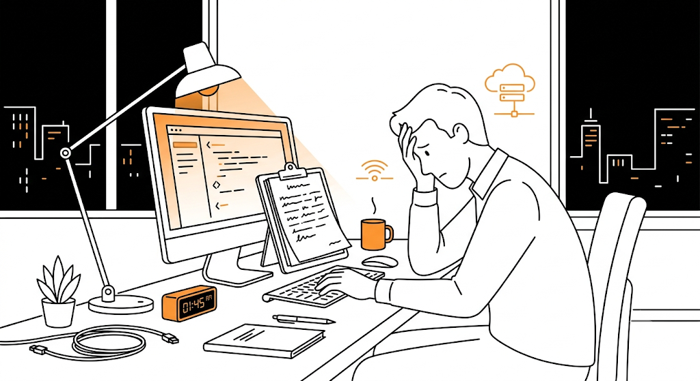
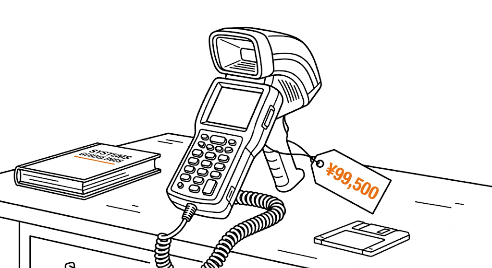
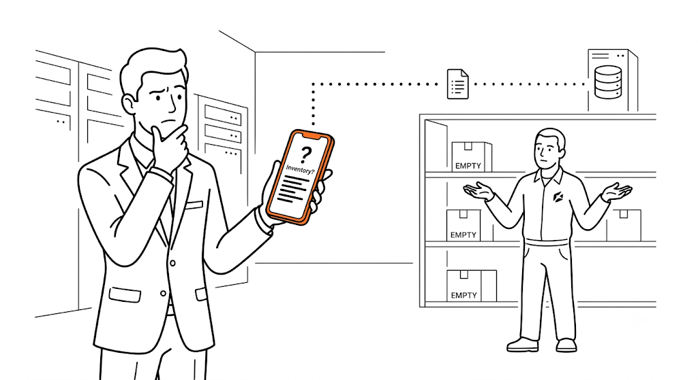
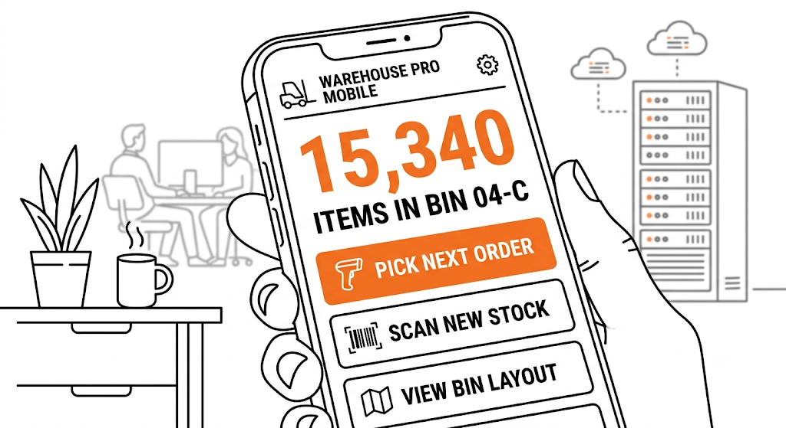
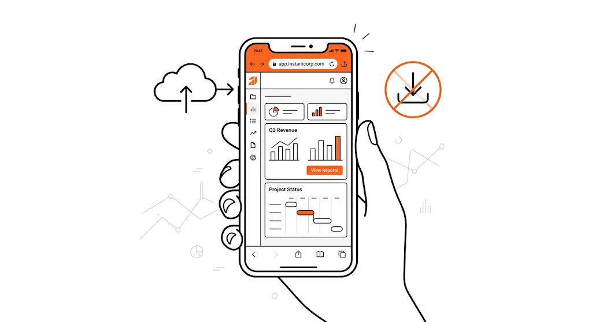
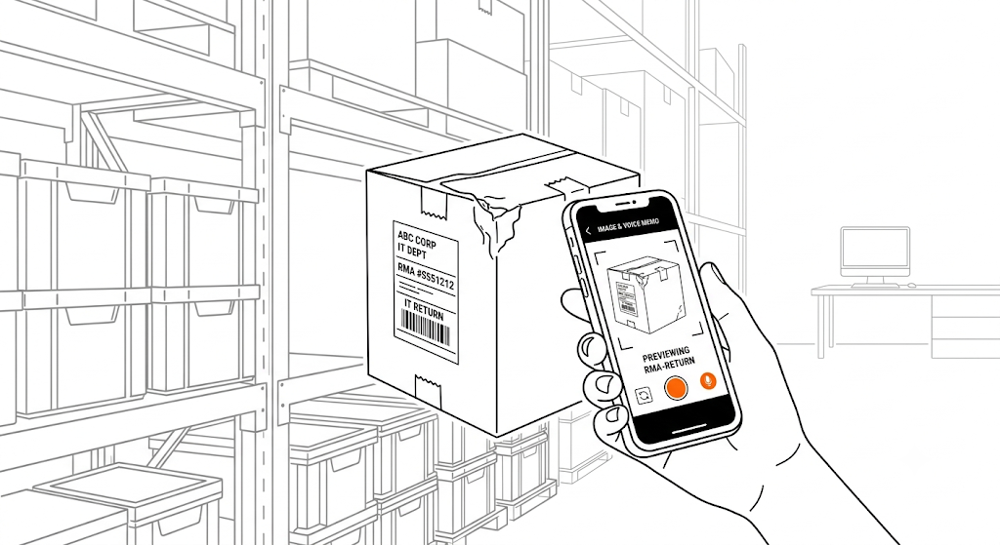
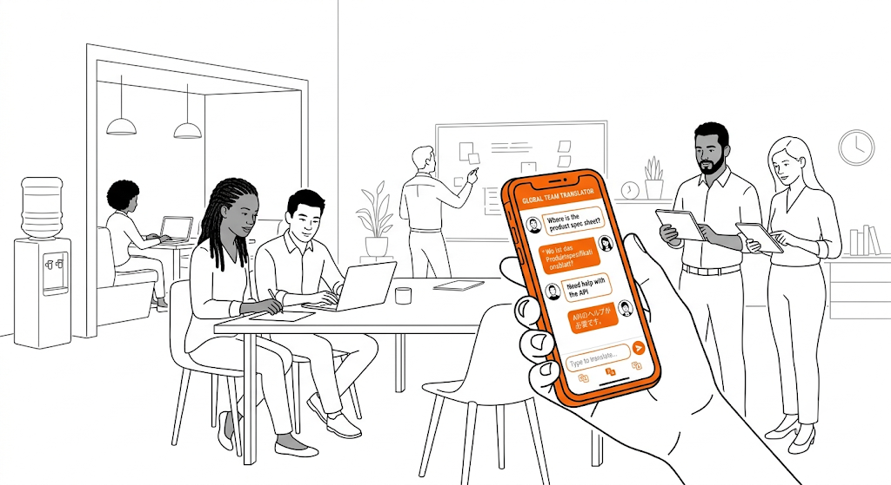
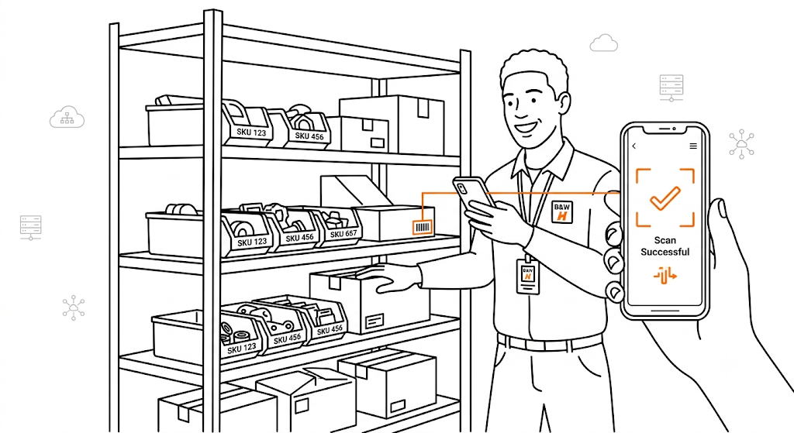
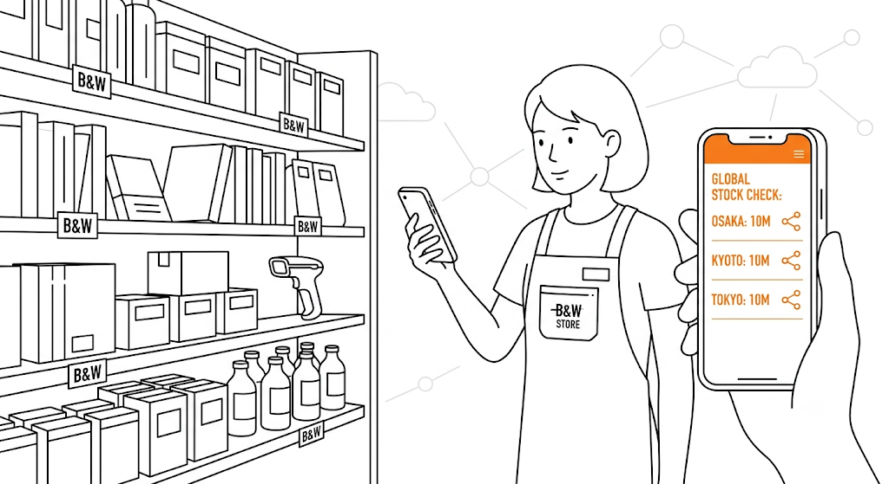
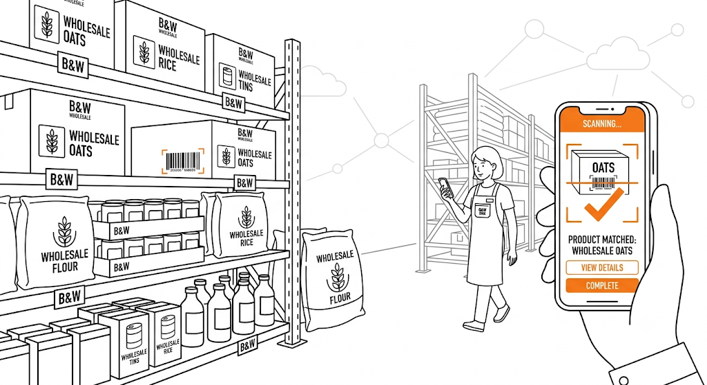

終わらない「事務所での打ち直し」
現場では紙の野帳（バインダー）に手書き。夕方事務所に戻ってから、疲れた体で数時間かけてExcelやシステムに手打ちしている。


現場では紙の野帳（バインダー）に手書き。夕方事務所に戻ってから、疲れた体で数時間かけてExcelやシステムに手打ちしている。

専用のバーコードリーダー（ハンディターミナル）を導入しようとしたが、1台数十万円もするため全従業員に配れない。

紙のデータがシステムに入力されるのは翌日。営業から「在庫ある？」と聞かれても、現場に見に行かないと確実な数字が出せない。
「現場の作業が終わってからが、本当の残業の始まり」
そんな状態から抜け出しましょう。
「つなげモン モバイル」は、高価な専用端末を必要としません。現場スタッフが普段から使い慣れているスマートフォンを、そのまま業務用の最強スキャナに変えます。
| 従来の紙・手入力 | 専用ハンディターミナル | つなげモン モバイル | |
|---|---|---|---|
| 導入コスト | 無料（紙代のみ） | 1台 15万〜30万円 | 手持ちのスマホで0円 |
| リアルタイム性 | ×（翌日反映） | 〇（即時反映） | 〇（即時反映） |
| 画面の柔軟性 | 紙なので自由 | 専用OSのため画面レイアウトの変更が困難 | ブラウザベースで画面のカスタマイズが自在 |
| 教育コスト | 不要 | 専用の操作説明が必要 | 直感的なアプリ操作で不要 |
商品や棚に貼られたバーコードをスマホのカメラで読み取ります。連続スキャンにも対応し、サクサク読み取れます。
大きなテンキー画面で数量を入力。タッチペン等を使っても押しやすいようにボタンを極大化しています。
現場で完了を押した瞬間に、事務所の在庫管理システムが更新されます。事務員は画面を見ているだけで作業完了です。

現場の年齢層に合わせて、文字やボタンのサイズを極限まで大きく設計。見間違いや押し間違いを防ぎます。

面倒なアプリのインストールは不要です。会社支給のスマホやタブレットのブラウザからアクセスするだけですぐに業務を開始できます。

「箱が破損していた」などのイレギュラー事態には、スマホのカメラで写真をパシャリ。文字を打つのが面倒なら音声入力も可能です。

ログインするユーザーごとに、画面の言語を英語やベトナム語などにワンタップで切り替え。言葉の壁によるミスを減らします。
※以下は支援内容に基づく想定イメージです。

通常業務の合間にスマホでスキャン、半日で完了
これまで2人がかりで読み上げとバインダー記入を行っていた棚卸し作業が、1人1台のスマホスキャンに変更。ペーパーレス化により集計の手間がゼロになり、棚卸しにかかる工数が75%削減されました。

スマホで全店舗の在庫を確認し、その場で移動処理
お客様から在庫を聞かれた際、スマホからすぐに他店舗のリアルタイム在庫を確認できるようになりました。店舗間の在庫移動も画面上で完結し、紙の伝票が不要になりました。

スマホのカメラでバーコード検品し、ミスを防止
出荷時の検品作業をスマホのカメラを使ったバーコード照合に変更。正しい商品か瞬時に判定されるため、新人スタッフでも誤出荷を起こさなくなり、検品スピードも向上しました。
自社に合ったモバイル活用をご提案します
貴社の現場の運用ルールや既存システムをヒアリングのうえ、最適な構築プランとお見積りを作成いたします。